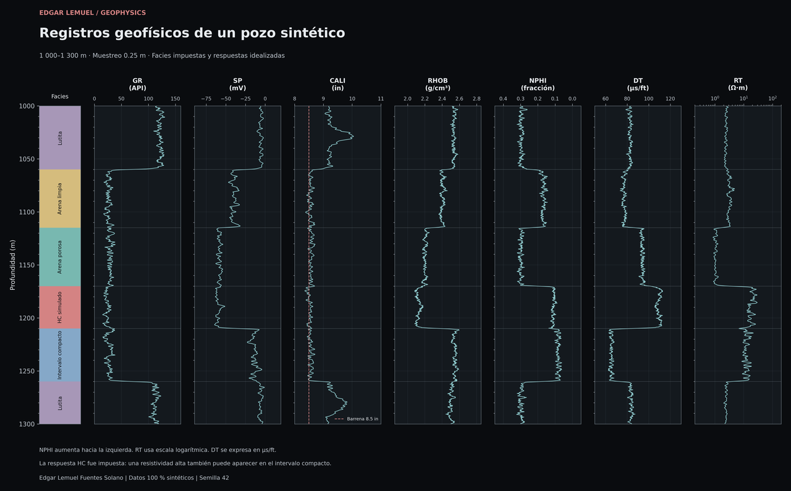
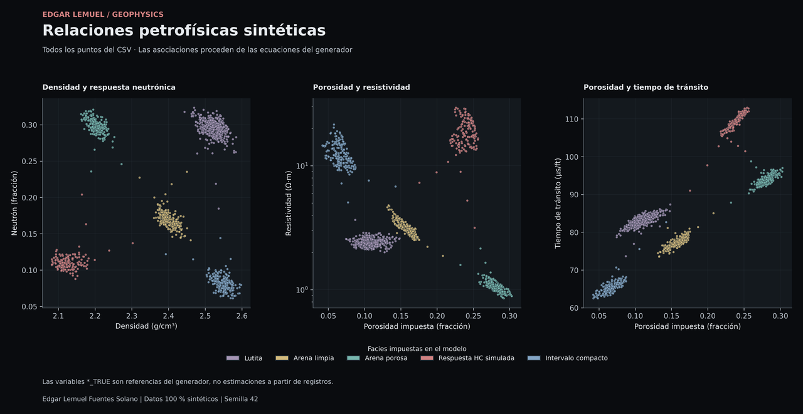

Geofísica computacional / Caso de estudio 02
Simulación y análisis de registros geofísicos de pozo
Generación y análisis de registros geofísicos sintéticos mediante Python, con modelamiento de respuestas petrofísicas y visualización multicanal por profundidad.
Datos 100 % sintéticos. El pozo y sus intervalos fueron diseñados matemáticamente. La respuesta tipo hidrocarburo es un escenario impuesto; no representa un descubrimiento ni mediciones de campo.
01 / Construcción del pozo
Una simulación propia y reproducible
El objetivo es explorar respuestas cualitativamente plausibles de registros geofísicos y sus relaciones con propiedades petrofísicas impuestas. Las curvas comparten esas propiedades, transiciones suaves y variabilidad correlacionada en profundidad.
- Profundidad
- 1 000–1 300 m
- Muestreo
- 0.25 m · 1 201 muestras
- Diseño estratigráfico
- Seis intervalos · cinco tipos de respuesta
- Generación reproducible
- Semilla aleatoria 42
Metodología de generación
- Definir una malla regular de profundidad y los valores base de arcillosidad, porosidad y saturación de agua por intervalo.
- Mezclar las propiedades en los contactos mediante transiciones de tangente hiperbólica, con escala de 0.65 m.
- Añadir heterogeneidad con ruido normal suavizado y mantener las propiedades dentro de los límites del generador.
- Calcular las respuestas geofísicas idealizadas a partir de las propiedades compartidas y añadir perturbaciones específicas de cada curva.
Propiedades que conectan las curvas
La arcillosidad, la porosidad y la saturación de agua controlan conjuntamente las respuestas. Esto permite comparar cómo una misma variación del medio se expresa en densidad, neutrón, tiempo de tránsito y resistividad.
Las transiciones suaves representan contactos graduales y el ruido correlacionado introduce textura a distintas escalas de profundidad. Estas variaciones son parte del diseño sintético y no una estimación de la incertidumbre de campo.
Cómo se diseñan las respuestas
- GR y SP. GR aumenta con el índice de arcillosidad. SP combina arcillosidad, porosidad y una línea base arbitraria.
- CALI. Parte de una barrena de 8.5 in y añade un efecto de arcillosidad, textura y ensanchamientos gaussianos centrados en 1028 y 1282 m.
- RHOB y NPHI. RHOB mezcla matriz y fluido. NPHI incorpora porosidad, una contribución arcillosa y un factor reducido para el componente no acuoso impuesto.
- DT. Usa un promedio temporal didáctico entre matriz y fluido; no resuelve propagación de ondas en un medio poroso.
- RT. Combina una relación tipo Archie con conducción arcillosa en paralelo y una perturbación multiplicativa. Una resistividad elevada también aparece en el intervalo compacto.
Estas relaciones permiten estudiar tendencias y contrastes entre intervalos. Sus coeficientes son supuestos del modelo, sin calibración de una formación o herramienta comercial.
02 / Dataset sintético
Variables, unidades e intervalos
El CSV contiene profundidad, siete curvas simuladas y cuatro referencias del generador. Ninguna columna representa una medición adquirida en campo.
| Variable | Unidad | Significado en el modelo |
|---|---|---|
| DEPTH | m | Profundidad a lo largo de un pozo idealizado, sin trayectoria desviada. |
| GR | API | Respuesta gamma asociada al índice de arcillosidad. |
| SP | mV | Potencial espontáneo con referencia arbitraria. |
| CALI | in | Diámetro de pozo simulado; barrena de 8.5 in. |
| RHOB | g/cm³ | Densidad volumétrica de una mezcla simplificada de matriz y fluido. |
| NPHI | fracción | Respuesta neutrónica aparente, no porosidad efectiva medida. |
| DT | µs/ft | Tiempo de tránsito compresional idealizado; no está en µs/m. |
| RT | Ω·m | Resistividad sintética, no lectura de una herramienta LLD específica. |
| VSH_TRUE | fracción | Índice impuesto de arcillosidad, usado como peso de mezcla en la matriz. |
| PHI_TRUE | fracción | Porosidad impuesta. |
| SW_TRUE | fracción | Saturación de agua impuesta en el espacio poroso. |
| LITH_CODE | categoría | Etiqueta del intervalo, asignada por el simulador. |
Seis intervalos, cinco tipos de respuesta
| Profundidad (m) | Código | Escenario | VSH | PHI | SW |
|---|---|---|---|---|---|
| 1000–1060 | 1 | Lutita | 0.78 | 0.10 | 1.00 |
| 1060–1115 | 2 | Arena limpia | 0.04 | 0.16 | 1.00 |
| 1115–1170 | 3 | Arena porosa | 0.08 | 0.28 | 1.00 |
| 1170–1210 | 4 | Respuesta HC simulada | 0.02 | 0.24 | 0.25 |
| 1210–1260 | 5 | Intervalo compacto | 0.06 | 0.065 | 1.00 |
| 1260–1300 | 1 | Lutita | 0.70 | 0.12 | 1.00 |
Los intervalos incluyen el techo y excluyen la base; el último incluye 1300 m. Las etiquetas cambian abruptamente y las propiedades se suavizan en los contactos, por lo que aparecen respuestas intermedias.
Las columnas *_TRUE y LITH_CODE son referencias de simulación, no resultados de una inversión ni registros independientes. Su uso como predictores de esas mismas propiedades introduciría información del generador.
03 / Visualización científica
Del perfil multicanal a las relaciones petrofísicas
El perfil multicanal permite comparar las respuestas a una misma profundidad; los diagramas de dispersión muestran sus relaciones con las propiedades petrofísicas. Selecciona una figura para ampliarla o descargarla en PNG y SVG.
Figuras en tema oscuro. El contenido numérico es idéntico en ambos temas.


01 / Registros por profundidad
Siete curvas alineadas con profundidad creciente hacia abajo. NPHI aumenta hacia la izquierda, RT utiliza escala logarítmica y DT se expresa en µs/ft. CALI incluye la referencia de barrena de 8.5 in.



02 / Relaciones petrofísicas
Las 1 201 muestras aparecen en cada panel, coloreadas por facies impuesta. Las asociaciones proceden de las ecuaciones del generador; las variables de referencia no son estimaciones obtenidas de registros.

04 / Alcance de la interpretación
Interpretación conjunta y limitaciones
El perfil permite reconocer los contrastes impuestos entre lutita, arenas y material compacto. La lectura conjunta es esencial: la resistividad depende tanto de la porosidad como de la saturación y la contribución arcillosa, por lo que una sola curva no determina de manera única el tipo de fluido.
- No existe un pozo real asociado, ubicación, campaña o herramienta de adquisición.
- No se modelan invasión, salinidad variable, temperatura, anisotropía ni resolución radial.
- La respuesta de lutita, la conducción arcillosa y el promedio sónico son aproximaciones sin calibración de campo.
- La textura y el ruido fueron diseñados. No se demuestra que reproduzcan la distribución estadística de registros reales.
- Las etiquetas son información del simulador. No se evalúa rendimiento de clasificación ni se estima incertidumbre.
Respuesta HC simulada. La saturación de agua reducida se impone en el generador. Una RT alta no identifica por sí sola hidrocarburos: el intervalo compacto ilustra esa ambigüedad.
05 / Recursos
Explorar el proyecto
El código permite estudiar la construcción del pozo y sus respuestas. La documentación técnica reúne las ecuaciones, los supuestos y las instrucciones de reproducción; el dataset permite explorar las curvas y las propiedades impuestas.
Regresar a proyectos destacados